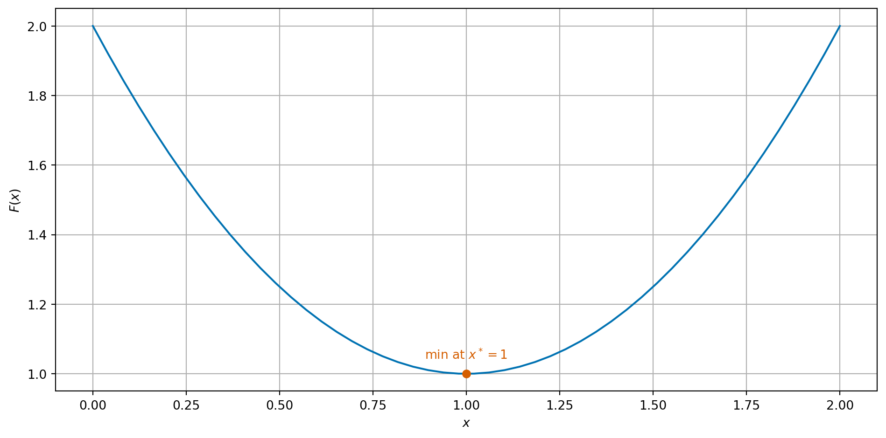
Introduction to optimisation
Give some examples of continuous optimisation problems
Optimisation is one of the key problems of all numerical computation. It corresponds to many real world problems:
We make a distinction between problems where the set of possible solutions (admissible states) are continuous or discrete. For example:
This part of the module will deal with continuous optimisation problems.
Give the definition of a minimum (minimal value) and minimiser of a function
The idea of optimisation is to find the best value \(x^*\) in \(\mathcal{A}\) which minimises \(F\) and the value of \(F^* = F(x^*)\) of the minimal cost.
Definition 1 We will write: \[\begin{equation} \label{eq:global-minimiser} \begin{aligned} F^* = \min_{x \in \mathcal{A}} F(x) \\ x^* = \mathop{\arg\min}\limits_{x \in \mathcal{A}} F(x). \end{aligned} \end{equation}\] We call \(x^*\) the minimiser and \(F^*\) the minimising value or minimal value.
Important
In this section of the notes, we have included some proofs to demonstrate why many of the results are true.
However, they will not be covered in the lectures and are not assessable (i.e. no questions on them will be in the exam).
However, we do expect you to understand the results and statements (without proofs).
Understand some typical situations when finding the minimum/minima of functions
It is sometimes easy to see where the minimum of a function is by plotting the function.
In one dimension, we can simply plot the graph of the function…
\[ F(x) = x^2 - 2x + 2. \]

Let \(F \colon \mathbb{R}^2 \to \mathbb{R}\) be given by \[ F(\vec{x}) = F(x_1, x_2) = x_1^4 - x_1^2 + 2 x_1 + 4 x_2^2 + 2 \]
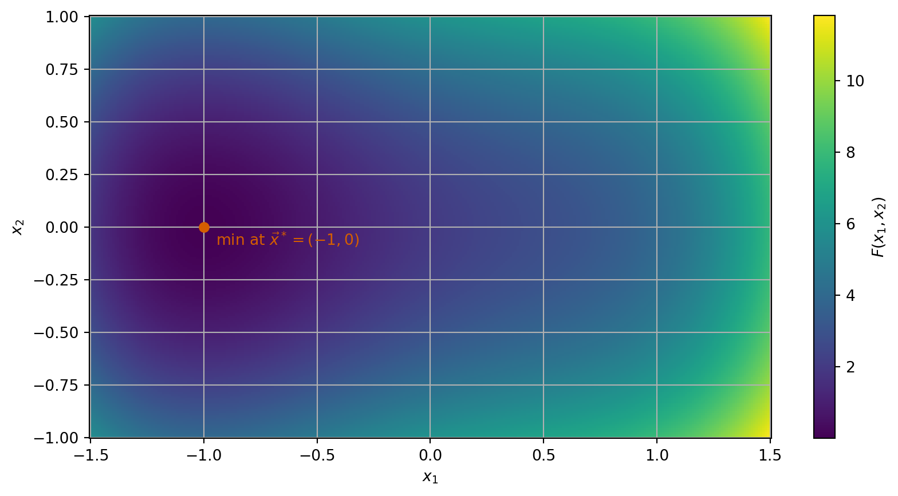
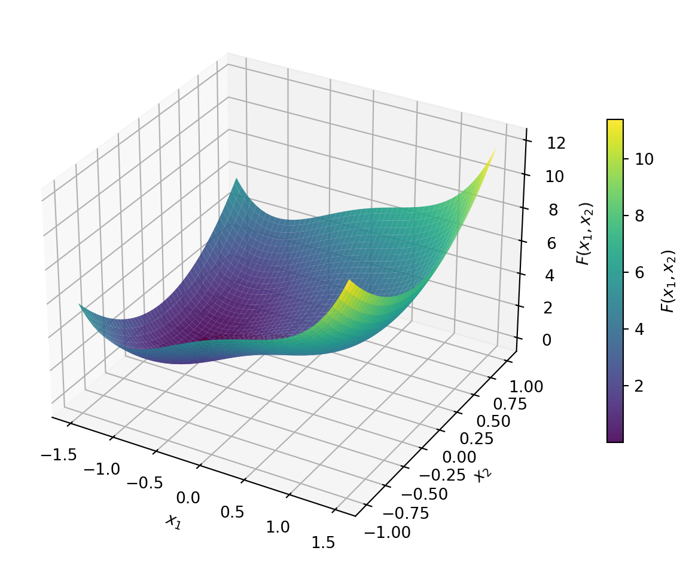
\[ F(x) = (x^2 - 1)^2 \]
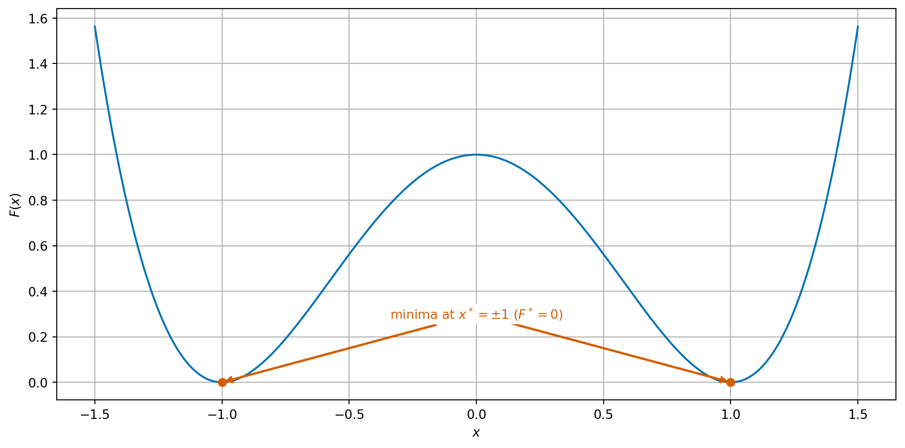
\[ F(x) = 1 + \sin^2(x). \]
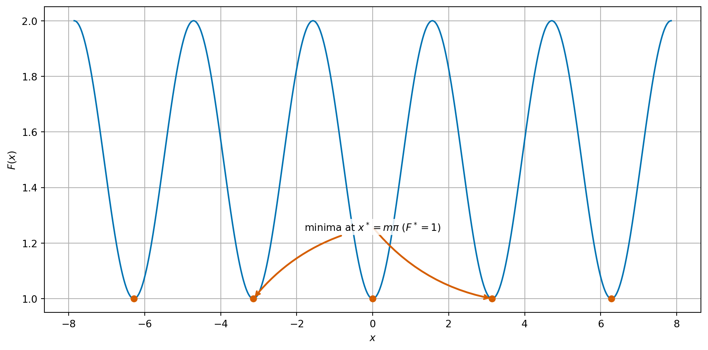
\[ F(x) = -x^2, \]
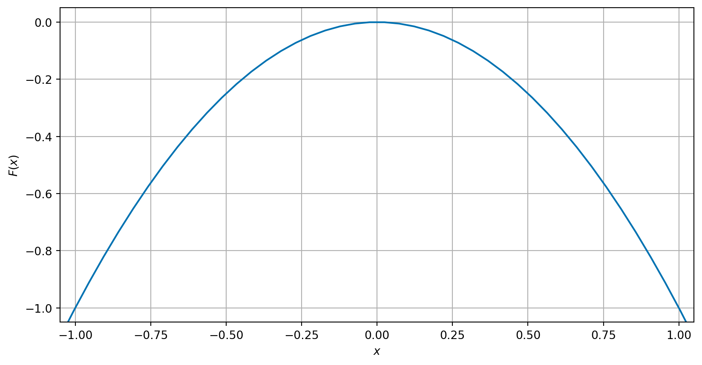
\[ F(x_1, x_2) = (x_1 - x_2^2)^2 \]
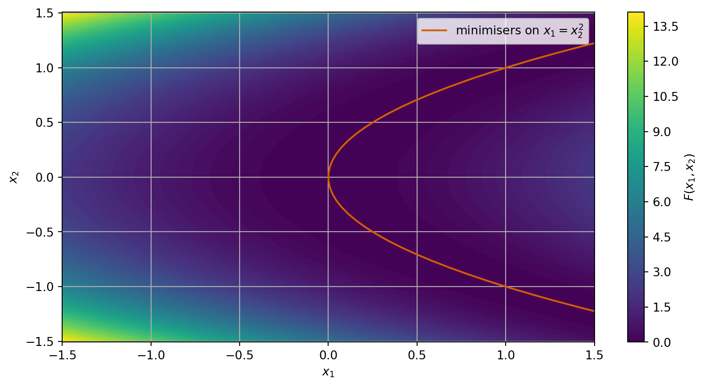
Distinguish between local and global minimisers
\[ F(x) = \frac{1}{4} x^4 - \frac{1}{12} x^3 - \frac{1}{2} x^2 + \frac{1}{4} x + \frac{1}{2}. \]
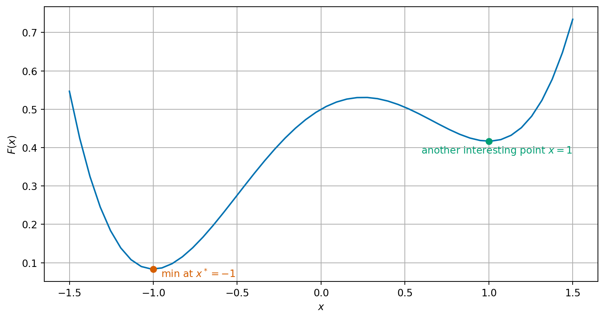
Definition 2 Scalar domain case: Given a smooth function \(F \colon \mathbb{R} \to \mathbb{R}\), we say that a point \(x^*\) is a local minimiser of \(F\) if there exists a value \(b\) such that for all \(y \in \mathbb{R}\) with \(|y - x^*| < b\), \(F(x^*) \le F(y)\).
Vector domain case: Given a smooth function \(F \colon \mathbb{R}^n \to \mathbb{R}\), we say that a point \(\vec{x}^*\) is a local minimiser of \(F\) if there exists a value \(b\) such that for all \(\vec{y} \in \mathbb{R}^n\) with \(\|\vec{y} - \vec{x}^*\| < b\), \(F(\vec{x}^*) \le F(\vec{y})\).
State and apply conditions to check a function \(F \colon \mathbb{R} \to \mathbb{R}\) is convex
Proposition 1 Let \(F \colon \mathbb{R} \to \mathbb{R}\) and let \(x^*\) be a local minimiser of \(F\). Then \(F'(x^*) = 0\).
Example 1 Let \(F(x) = (x-3)^2 + 3 = x^2 - 6x + 12\). For the completed square form, we see that \(F\) has a minimum at \(x^* = 3\).
Exercise 1 Let \(F(x) = \frac{1}{4} x^4 - 2 x^3 + \frac{11}{2} x^2 - 6 x + 1\). Identify any potential local minima by finding the derivative of \(F\) and finding all points with \(F'(x) = 0\).
We next revisit the example from the start of this section \[ F(x) = \frac{1}{4} x^4 - \frac{1}{12} x^3 - \frac{1}{2} x^2 + \frac{1}{4} x + \frac{1}{2}. \] We can compute the derivative as: \[ F'(x) = \phantom{x^3 - \frac{1}{4}x^2 - x + \frac{1}{4}} \]
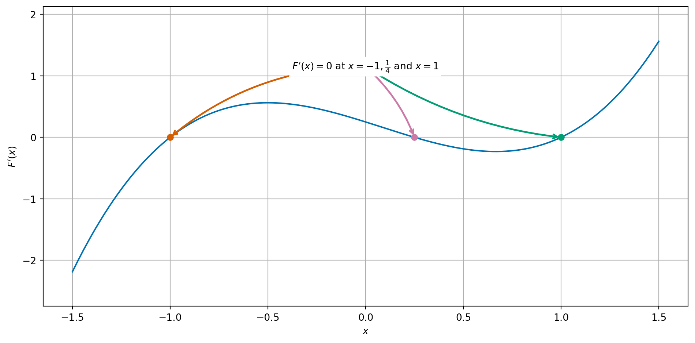
\[ F''(x) = \phantom{3 x^2 - \frac{1}{2} x - 1,} \] so that \[\begin{align*} F''(-1) &= \phantom{3 \times (-1)^2 - \frac{1}{2} \times (-1) - 1 = 3 + \frac{1}{2} - 1 = \frac{5}{2} = 2.5 > 0} \\ F''(\tfrac{1}{4}) &= \phantom{3 \times (\frac{1}{4})^2 - \frac{1}{2} \times \frac{1}{4} - 1 = \frac{3}{16} - \frac{1}{8} - 1 = -\frac{15}{16} = -0.9375 < 0} \\ F''(1) & = \phantom{3 \times 1^2 - \frac{1}{2} \times 1 - 1 = 3 - \frac{1}{2} - 1 = \frac{3}{2} = 1.5 > 0.} \end{align*}\]
Proposition 2 Let \(F \colon \mathbb{R} \to \mathbb{R}\) and \(x^* \in \mathbb{R}\) such that \(F'(x^*) = 0\) and \(F''(x^*) > 0\). Then \(x^*\) is a local minimiser of \(F\).
Next, let us compare two examples:
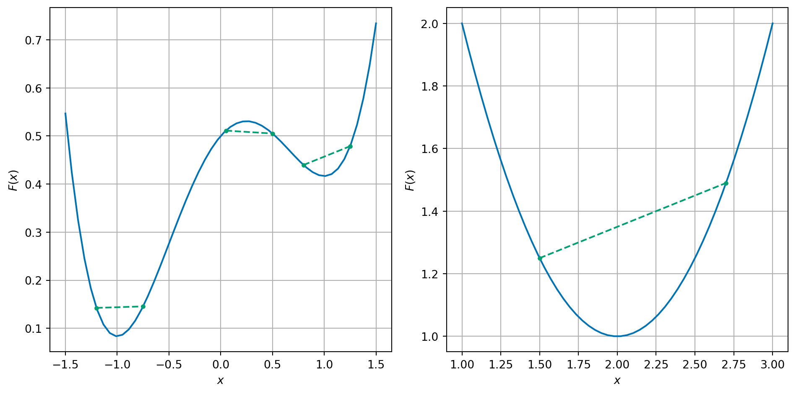
Definition 3 A function \(F \colon \mathbb{R} \to \mathbb{R}\) is locally convex in an interval \(B \subset \mathbb{R}\) if for all points \(x, y \in B\): \[ a F(x) + (1-a) F(y) \ge F(a x + (1-a) y) \quad \text{for all} \quad a \in [0, 1]. \] We say that \(F\) is convex if it is convex on \(\mathbb{R}\) (i.e., on every interval \(B \subset \mathbb{R}\)).
Lemma 1 Let \(F \colon \mathbb{R} \to \mathbb{R}\) be a smooth function. Then the following are equivalent:
Exercise 2 Show that the following functions are or are not convex on \(\mathbb{R}\):
Proposition 3 Let \(F \colon \mathbb{R} \to \mathbb{R}\) and \(x^*\) be a point such that \(F'(x^*) = 0\). If \(F\) is locally convex in a region \(B\) with \(x^* \in B\) then \(x^*\) is a local minimiser of \(F\).
Theorem 1 Let \(F \colon \mathbb{R} \to \mathbb{R}\) be convex. Then any local minimiser is a global minimiser.
Example 2 Take the same example as before \(F(x) = x^2 - 4 x + 5\). Then \[ F'(x) = 2 x - 4. \] We can easily see that \(F'(2) = 0\) hence \(x^* = 2\) is a local and indeed a global minimiser since \(F\) is convex.
We can also see this by completing the square: \[\begin{equation*} F(x) = x^2 - 4 x + 5 = (x-2)^2 + 1. \end{equation*}\] We can read off that \(F\) has a minimum at the same point that \((x-2)^2 = 0\), i.e. that \(x^* = 2\).
\[ F(x) = \begin{cases} (x+1)^4 & \text{for}\quad x \le -1 \\ 0 & \text{for} \quad -1 < x < 1 \\ (x-1)^4 & \text{for}\quad x \ge 1. \end{cases} \]
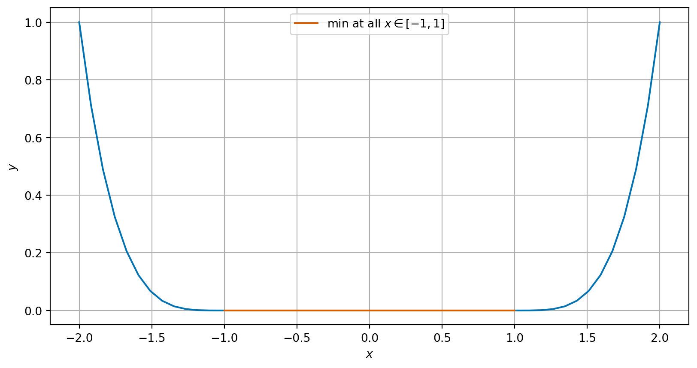
\(F\) is a convex, smooth function, but all points \(x \in [-1, 1]\) are minimisers.